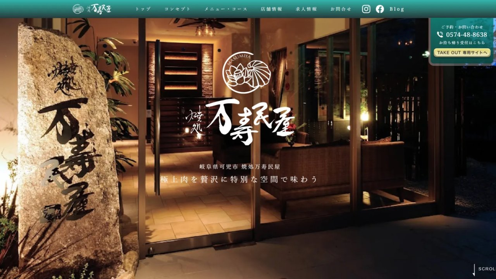

WEB DESIGN — 飲食業
地域密着型飲食店 / Webサイト設計

— 01 / Problem
地域に根付いた店なのに、初めての人が「来たい」と思えていなかった。
— 02 / Gap
料理の情報が「メニュー」として整理されていた。人は「その店に行く体験」を探している。
— 03 / Translation
店の空気感・人・こだわりを起点に再設計。「情報」ではなく「体験の予感」を届ける構造に変えた。
— Overview
店の「空気感」を、
画面の向こうに届ける。
地域に根付いた飲食店のWebサイトには、グルメサイトにはない固有の温度感がある。「来たことがある人が再訪したくなる」だけでなく、「まだ来たことがない人が、来たいと思う」—— その体験をWebで再現することがこのプロジェクトの核心だった。撮影から設計まで一貫して担当した。
— 01 課題
飲食店のWebサイトは料理写真を並べれば成立すると思われがちだが、実際には「なぜここに来るのか」という動機の設計が欠けていることが多い。写真の質より先に、店の"物語"が伝わらなければ、訪問者は離脱する。
料理の写真は、最後の一押しにすぎない。
グルメサイトと同じ構造では「なぜここか」が伝わらない
写真素材がなく、店の空気感を一から視覚化する必要があった
更新・運用を想定したシンプルで持続可能な設計が求められた
— 02 設計
Web制作と写真撮影を別々に発注すると、必ず「素材とデザインのズレ」が生まれる。このプロジェクトでは撮影から設計を一人で担当することで、最終的なビジュアルを見越した写真を撮り、その写真が最も活きる設計を行った。
① 撮影ディレクション
設計を見越した撮影
Webレイアウトを事前に設計した上で撮影。ヒーロー用・メニュー用・雰囲気用と用途を分けてカット数を設計。
② 世界観の言語化
店の「らしさ」を一文に
オーナーへのヒアリングから店の個性を抽出。キャッチコピーではなく「この店の空気を一文で表す」表現を設計。
③ 導線設計
来店動機を後押しする順序
店の雰囲気 → メニュー → アクセスの順で、「行きたい」という気持ちが自然に高まる情報の流れを設計。
④ 運用設計
オーナーが更新できる構造
メニューの季節変更や営業時間の変動に対応できるよう、オーナー自身が更新しやすい構造で実装。
— 03 成果
撮影と設計を一貫して担当したことで、写真とレイアウトが有機的に連動した。グルメサイトとの差別化として、店固有の空気感を持つWebを実現した。
撮影・設計の一貫ディレクションで写真とレイアウトが有機的に連動
グルメサイトにはない店固有の温度感・空気感を持つWebを実現
オーナーが自走できるシンプルな更新体制を確立
— 04 / Impact